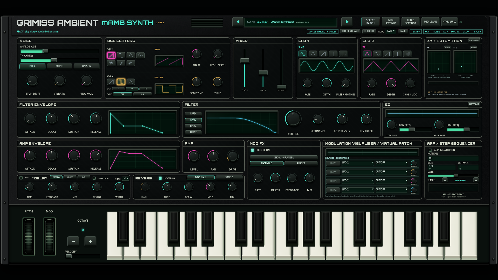
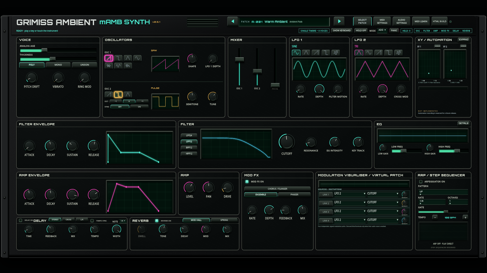
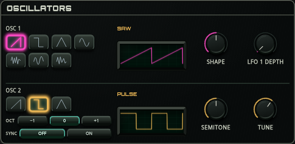
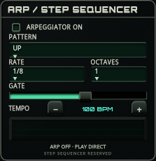
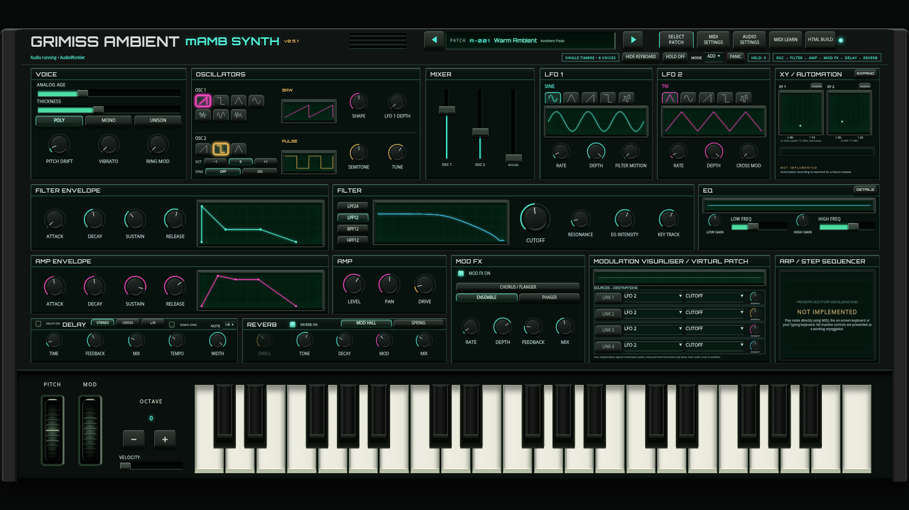

Open the playable synth · Download standalone HTML
SELECT PATCH → ARPEGGIOS, choose a preset and hold a note or chord. Use HOLD to latch it. PANIC clears the pattern. TEMPO −/+ shares the delay's BPM; Shift changes it by ten.
| Number / preset | Pattern | BPM | Octaves |
|---|---|---|---|
| 91 · Teal Steps | UP | 108 | 2 |
| 92 · Midnight Relay | DOWN | 118 | 1 |
| 93 · Glass Orbit | UPDOWN | 88 | 3 |
| 94 · Spring Circuit | PLAYED | 124 | 1 |
| 95 · Amber Ladder | UP | 96 | 3 |
| 96 · Velvet Triplets | UPDOWN | 76 | 2 |
| 97 · Photon Rain | RANDOM | 132 | 3 |
| 98 · Clockwork Bass | PLAYED | 112 | 1 |
| 99 · Drift Mosaic | RANDOM | 64 | 2 |
| 100 · Endless Horizon | UPDOWN | 72 | 2 |
Rounded section rules and heavy labels look printed on the panel. Active controls retain the original illumination colours. Approved panel and keyboard proportions remain intact.





Browser and numerical audio verification covers note ownership, tempo/gates, HOLD/sustain, patch recall, Worklet/fallback and both target sizes. Physical hardware and human listening remain unverified. External MIDI Clock and step editing are future features.